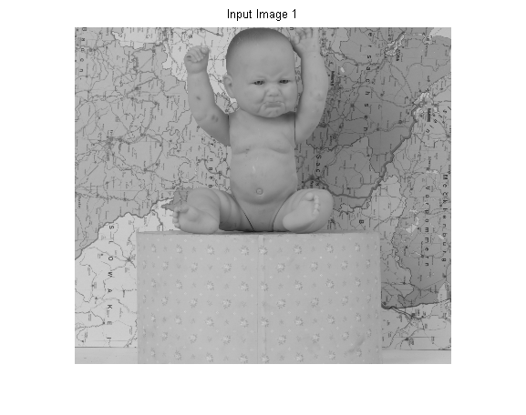
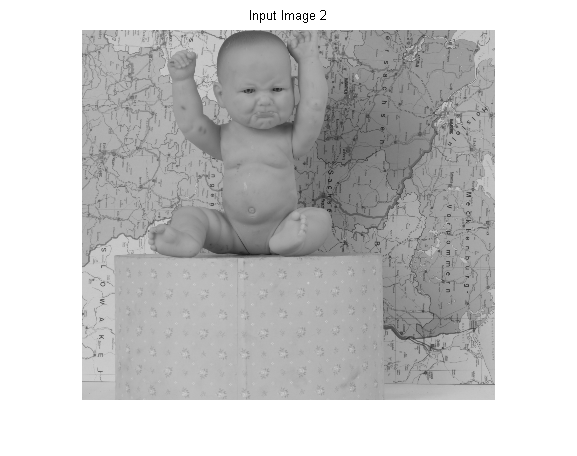
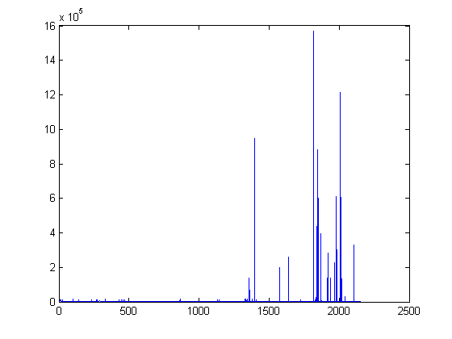
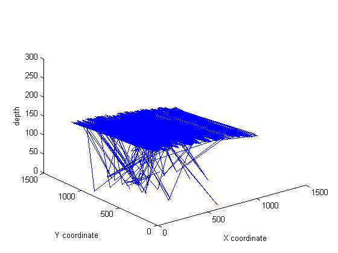
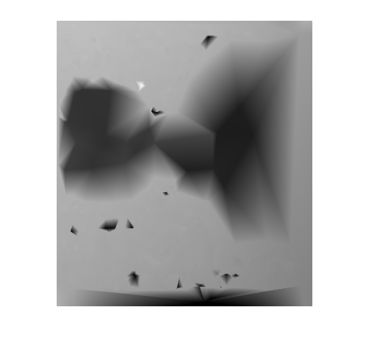
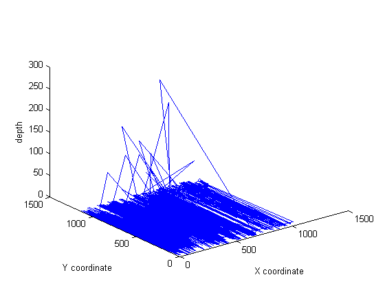
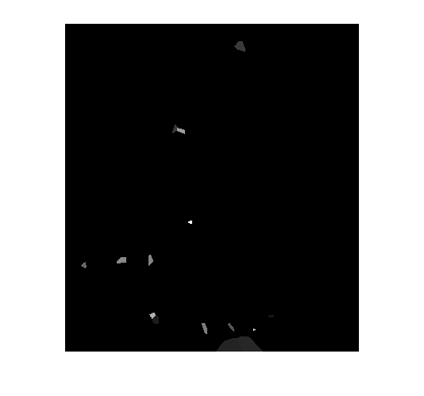

Shape from stereo
Contents
Input Images
im1 = rgb2gray(imread('baby1view1.png')); im2 = rgb2gray(imread('baby1view5.png')); figure(); imshow(im1); title('Input Image 1') figure(); imshow(im2); title('Input Image 2') imwrite(im1, 'baby1view1.jpg', 'jpg'); imwrite(im2, 'baby1view5.jpg', 'jpg');
Warning: Image is too big to fit on screen; displaying at 33% Warning: Image is too big to fit on screen; displaying at 33% 
Extracting Relevant Features
We use SIFT algorithm to extract relevant features to help us get corresponding points so that we can calculate the disparity and get the depth map.
[common1, common2] = ourmatch('baby1view5.jpg', 'baby1view1.jpg');
Finding keypoints... 6388 keypoints found. Finding keypoints... 6734 keypoints found.
Calculating Disparity
We have the corresponding points in common1 and common2 array. i'th row in common1 corresponds to the i'th point in common2
disp = sum(((common1-common2).^2), 2); figure(); title('Disparity Plot') plot(disp) depth = 1./disp; scaled_depth = 255*(depth-min(depth))./(max(depth)-min(depth)); position1 = round(common1); position1(position1<1) = 1; depth_map = zeros(size(im1)); for i = 1:size(position1); depth_map(position1(i,:)) = scaled_depth(i); end figure() plot3(position1(:,1), position1(:,2), scaled_depth) xlabel('X coordinate'); ylabel('Y coordinate'); zlabel('depth'); [xi, yi] = meshgrid(1:1110, 1:1240); F = scatteredInterpolant(position1(:,1), position1(:,2), scaled_depth); V = F(xi, yi); figure() title('First Depth Map'); imshow(V/255);
Warning: Duplicate data points have been detected and removed - corresponding values have been averaged. Warning: Image is too big to fit on screen; displaying at 33%  
Slightly improvised approach
Clearly we need to do some data cleaning before we can get any usdeful depth data
disp(disp<0.05*max(max(disp))) = inf; depth = 1./disp; scaled_depth = 255*(depth-min(depth))./(max(depth)-min(depth)); position1 = round(common1); position1(position1<1) = 1; depth_map = zeros(size(im1)); for i = 1:size(position1); depth_map(position1(i,:)) = scaled_depth(i); end figure() plot3(position1(:,1), position1(:,2), scaled_depth) xlabel('X coordinate'); ylabel('Y coordinate'); zlabel('depth'); [xi, yi] = meshgrid(1:1110, 1:1240); F = scatteredInterpolant(position1(:,1), position1(:,2), scaled_depth, 'nearest', 'nearest'); V = F(xi, yi); figure() title('Second Depth Map'); imshow(V/255);
Warning: Duplicate data points have been detected and removed - corresponding values have been averaged. Warning: Image is too big to fit on screen; displaying at 33% 